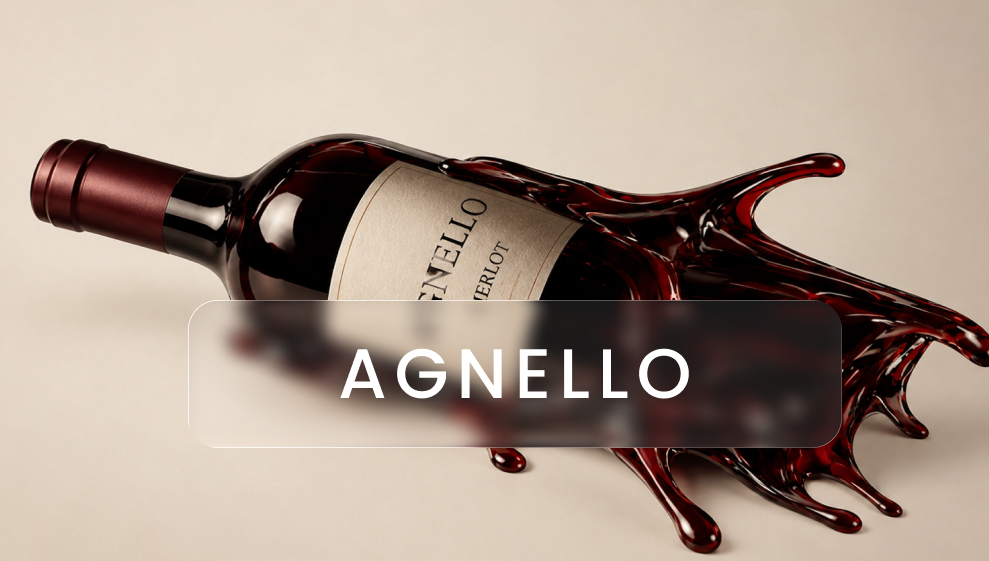

O universo dos vinhos é vasto e diversificado, com milhares de variedades de uvas que apresentam diferentes aromas e sabores, influenciados pelo clima, solo, região de cultivo e processos de produção. Por isso, escolher o vinho ideal pode ser um desafio, especialmente para quem está começando. Conhecer suas características, experimentar diferentes rótulos e considerar a ocasião e a harmonização com os alimentos ajudam a tornar essa escolha mais fácil. Se você quer saber mais curiosidades sobre vinhos, clique aqui.
A conservação adequada é essencial para preservar a qualidade dos vinhos. A exposição excessiva à luz, ao calor e a vibrações pode alterar suas características, como cor, aroma e sabor. Por isso, a Vinheria Agnello adota cuidados especiais na armazenagem, principalmente de vinhos raros e de maior valor, buscando manter suas características originais e garantir a qualidade de cada garrafa. Nossos clientes adoram nossos produtos, se quiser conhecer mais sobre o perfil deles, veja a página dos clientes.